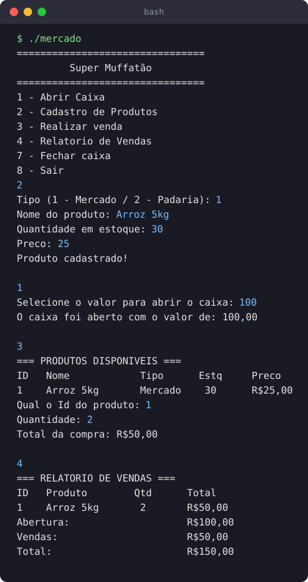
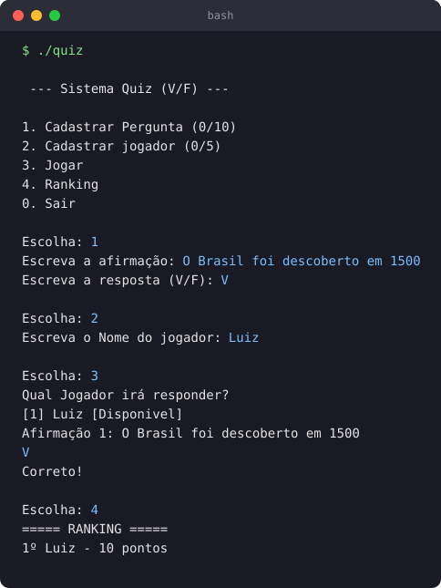
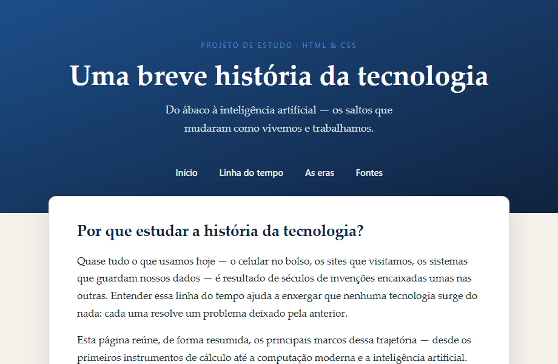

Projetos de estudo, a maioria feita nas disciplinas do curso. São simples, mas
cada um marca uma coisa nova que aprendi.

🛒
Sistema de Mercado
Simulação de caixa em C que fui expandindo aos poucos: cadastro de produtos,
controle de estoque, vendas e relatórios, com os dados salvos em arquivo. Foi
onde ponteiros e alocação dinâmica finalmente fizeram sentido pra mim.
CPonteirosArquivos

❓
Quiz de Verdadeiro ou Falso
Jogo de quiz para terminal, em C. Dá pra cadastrar perguntas e jogadores, responder
e ver um ranking no final. Pratiquei structs, divisão em funções e ordenação.
CStructs

🕰️
História da tecnologia
Site de página única sobre a história da tecnologia, do ábaco à IA. Comecei
de um layout genérico e fui trabalhando o conteúdo, a tipografia e o CSS
responsivo (cabeçalho, linha do tempo, rodapé em colunas).
HTMLCSS
🚧
Em andamento
Agora estou começando com PHP. O próximo projeto aqui deve ser um CRUD
simples, pra sair do front e praticar o back-end.
PHPSQL